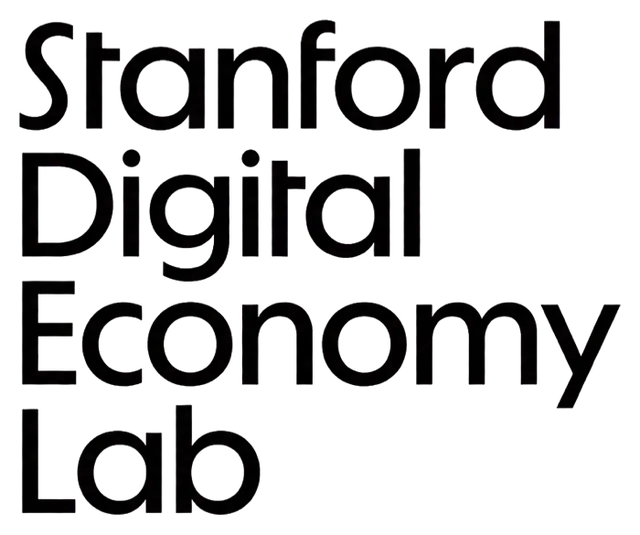
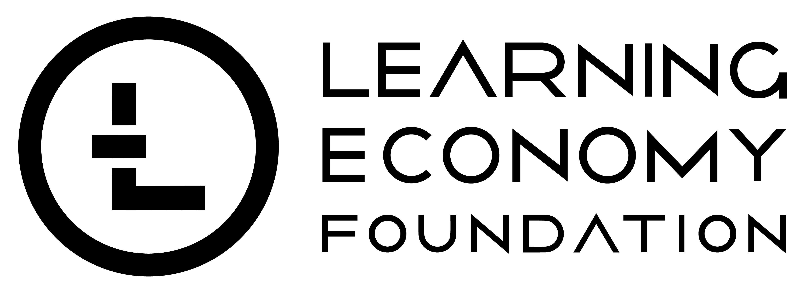

Memory that belongs to
the person, not the platform.
A user-governed layer of personal context that persists across interactions, moves across tools, and is shared only by role, consent, and purpose.
Convened by


-
01
Portable
Moves with the person across tools, models, and institutions.
-
02
Persistent
Accumulates over a lifetime rather than resetting each session.
-
03
Governed
Shared selectively by role, consent, and purpose. Always revocable.
Founding report
The Future of Personal AI: Portable and Persistent Personal Memory through a Unified Human Context Protocol
Projects
Subscribe
Follow the work.
Occasional updates on the protocol, pilots, and publications.